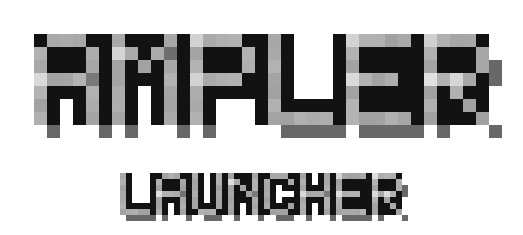

Ampler Launcher
- Play
- Skins

Skins
Add skin folder
No skins yet.
Add one by dropping its folder in website/skins/:
website/skins/my skin/ my skin.png the skin preview.my skin.png the preview picture
That is the whole setup - reload and it is on this page. To remove a skin, delete its folder.
Opened straight off disk? Press Add skin folder and pick the folder, or run python3 website/tools/bake-skins.py once and reload.